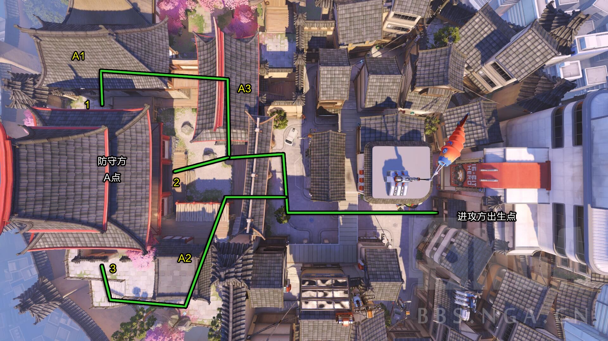
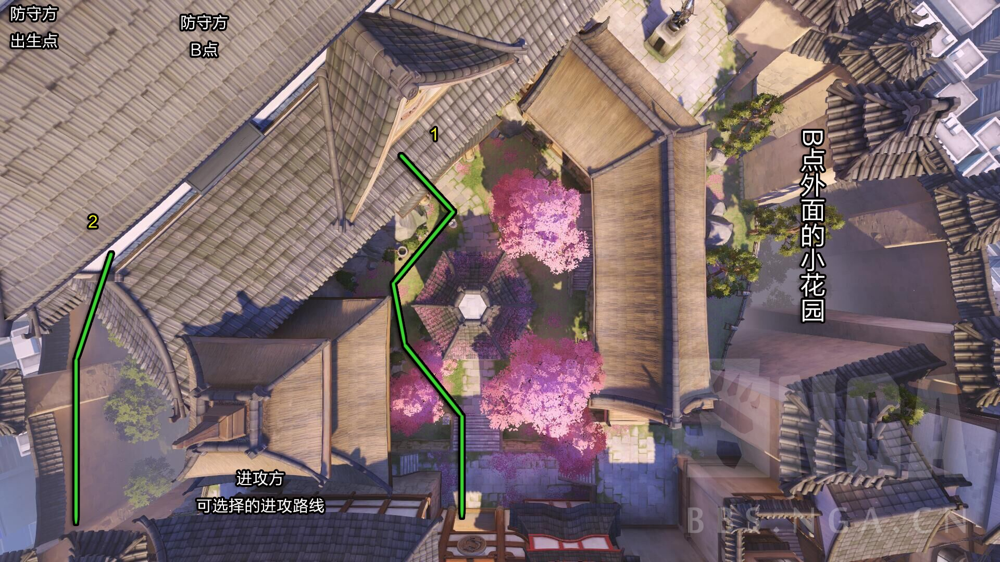
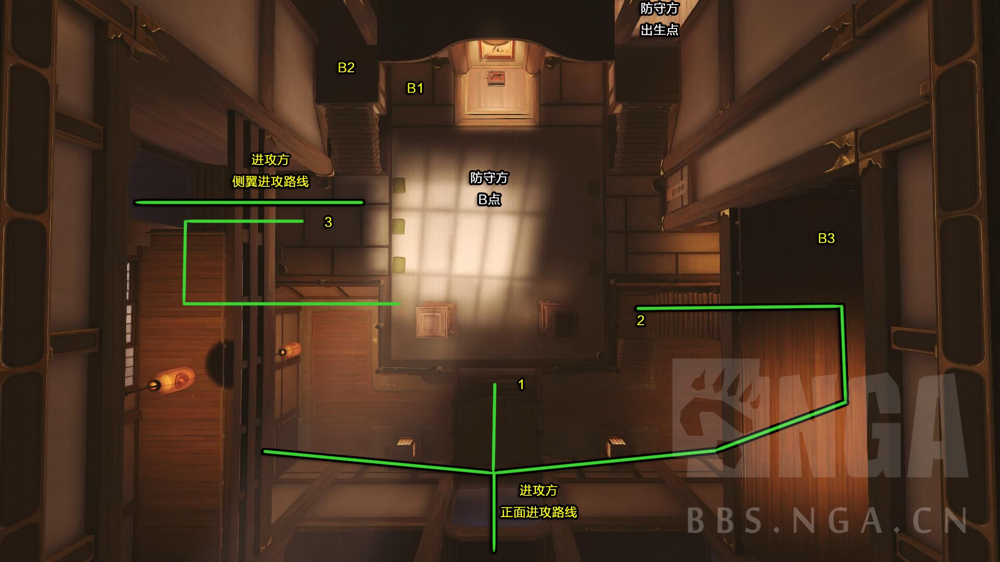

位于日本的花村，在村子美丽宁静的背后深藏着不为人知的秘密。这张图进攻方出生在下方的游戏大厅内，防守方出生在地图右上的大房子里。这张图属于单纯的占点图，进攻方在占领A点(地图上方放置大钟的阁楼)后，重生点会变动，刷在A点右侧的房间里，具体位置如下图所示。此时防守点B会刷新在大房子中，与防守方重生点非常近，当进攻方占领B点后，便获得胜利，同样的，防守方如能坚持防守B点到时间走完，防守方便获得胜利。地图整体比较复杂，但是路线依旧很明确。
进攻方出生点在上图的右侧的楼中，防守方要防守上图的左侧A点。
进攻方可以选择三条进攻路线进攻A点：分别是最上方的线路1，中路的线路2以及最下路的线路3。
PS：A点无论选择哪条路线进攻，必须通过一扇位于上图中央的大门，而攻防双方在大门附近会有激烈交火，而A点的得与失就在于大门处防守与进攻的结果，如果防守方被一波团灭，则A点会被迅速占领，因为防守方的出生点在B点附近，距离A点很远，而A点则距离进攻方很近。
其中线路2是从A点正面进入的，也是三条路线中相对困难的，因为防守方一般来说会优先考虑A点正门的防守，所以进攻方可以从其余的上下两路选择进攻。其中线路3需要穿过上图左下方的房子，就可以绕道A点的下方进行攻击，而线路1则需要穿过2个房子才可以到达A点的上方进行攻击。
推荐的防守方英雄：堡垒，托比昂，寡妇(黑百合)，半藏。
推荐的防守点：堡垒和托比昂可以预先在A1、A2、A3的房屋里面埋伏。
上图为B点外面的小花园，位于A点和B点中间，其中进攻方可以通过两条路线攻击B点，线路1直接穿过花园进入B点所在的楼中，相对于线路2更难些，因为正对着B点，很容易被防守方攻击。
推荐战术，莱因哈特(大锤)顶盾强行沿着线路1进到楼内，或者温斯顿(猩猩)打开保护罩，其他人顺次快速冲进去。
切记线路1强攻损伤特别大，而且进攻方复活点又比较远，只要防守方和进攻方展开阵地拉锯战，进攻方就很难取胜。
线路2需要有跳跃技能的英雄，比如温斯顿(猩猩)或者法拉(法老之鹰)可以跳到上图左下角的地方，然后沿着线路2进入B点的左翼进攻，骚扰或者牵制防守方吸引其注意力，然后队友利用有利时机沿着线路1正面攻击。
B点为室内的据点。双方就在上图所示的地方争夺花村最后的据点。 其中进攻方总体来讲有侧翼进攻与正面进攻两条路线，其中正面进攻又可分为三个不同的路线，如上图线路1就是直接刚正面，适合肉盾型的英雄顶在前面，线路2从正门进入房间的进攻方选择从右侧的小房间包抄进来，从右翼发动进攻，而且右侧的小房间里面还有大血包可以补给，线路3沿着线路2继续向前走，从室内的桥下穿过，直接走到左翼，可以和之前从侧翼进攻的队友配合进行协同进攻。进攻方需要堤防2楼的埋伏。